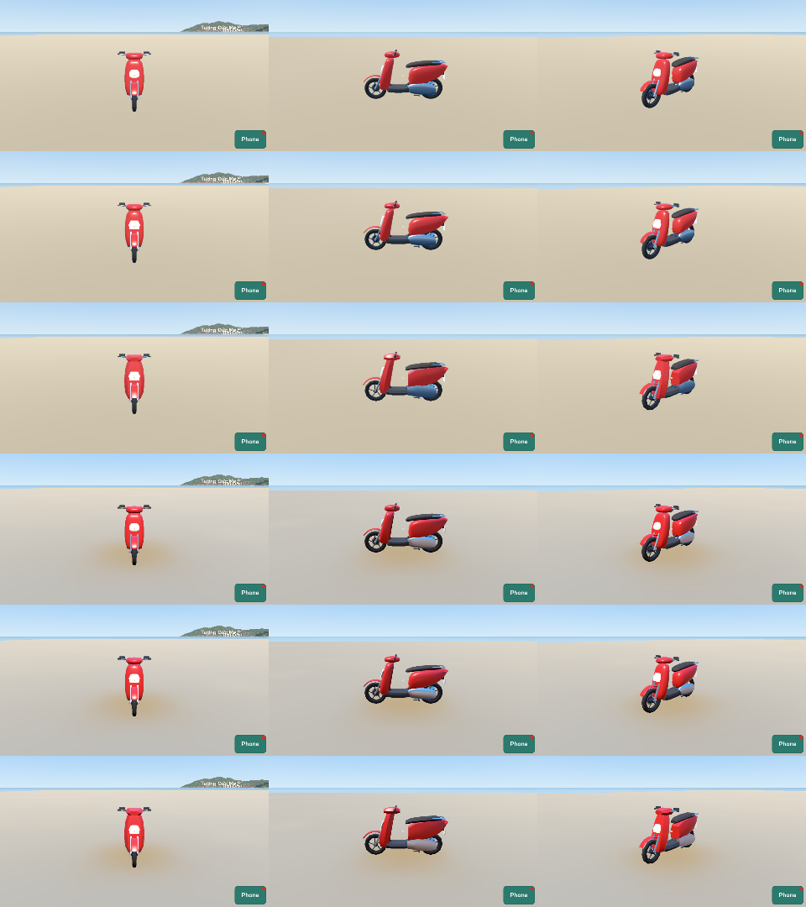

Plan 0023, PT-56. World commit 9dae4538d6af6fccc64cac6f9e1c7d0b081ddcf2. The game gives the materials and the light.
Catalog V1. Plan 0023, R9a: the parked scooters of the test street and of the Vũng Tàu world. Plans 0009 and 0018.
Order: {"blueprint": "catalog", "options": {"name": "honda_vision_110"}}, hash 176593c8c18de6bff70b0189e26ee31a.
Rows: Low near, mid, far; High near, mid, far. Columns: front, side, three quarters. 12:00.
